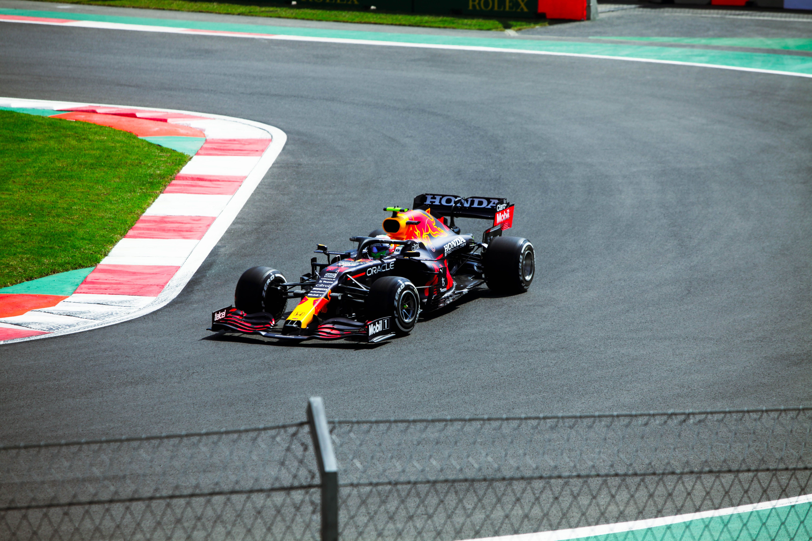
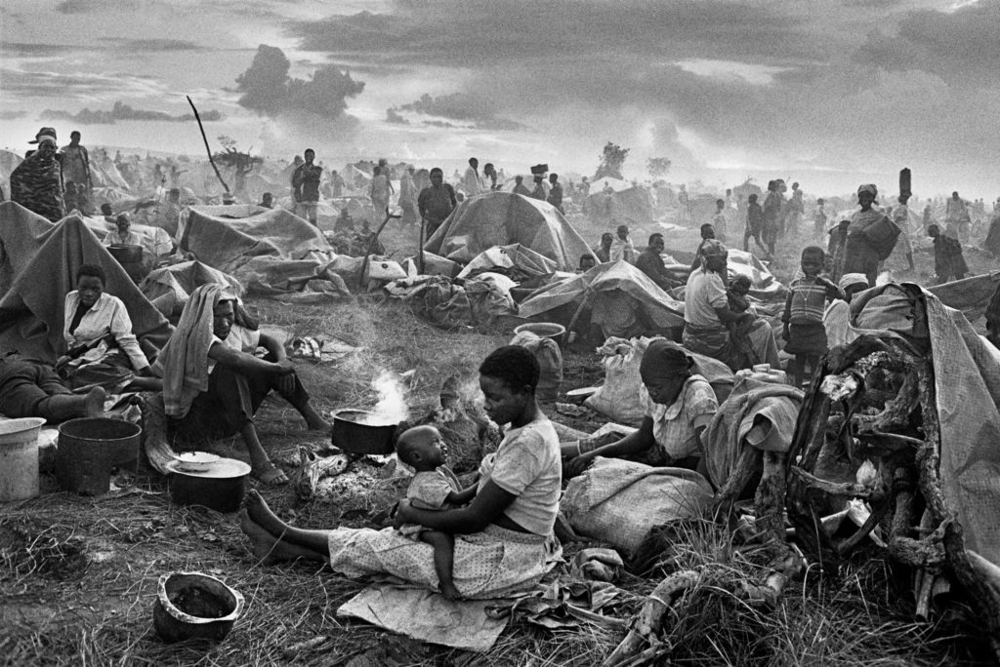
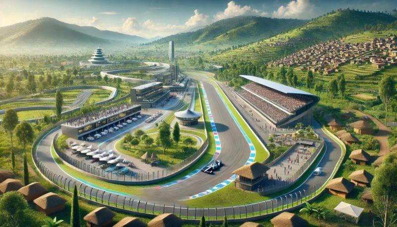

Featured storyRwanda's Road to Formula 1
Inside the ten-year agreement and the proposed African Grand Prix expected in the early 2030s.
RWANDA · HISTORY · THE FUTURE
From a painful past to new ambitions on the world stage, explore Rwanda's journey toward hosting Formula 1 and what this milestone could mean for the future.
Discover the StoryVideo · 1 min · A poem by Malaika Uwamahoro featuring Naomi Schiff. Source: Visit Rwanda on YouTube.

Featured storyInside the ten-year agreement and the proposed African Grand Prix expected in the early 2030s.

HistoryUnderstanding the history of the 1994 Genocide against the Tutsi as Rwanda looks toward the future.

The futureWhat the proposed Grand Prix could mean for young people, tourism, technology, and local businesses.
Discover narrated stories and interviews as audio features are added.
Explore video reporting and official sources about Rwanda's F1 milestone.
Read the story in text and access media with captions or transcripts where available.
Explore Rwanda's history, recognise its people, and question what the future may hold.